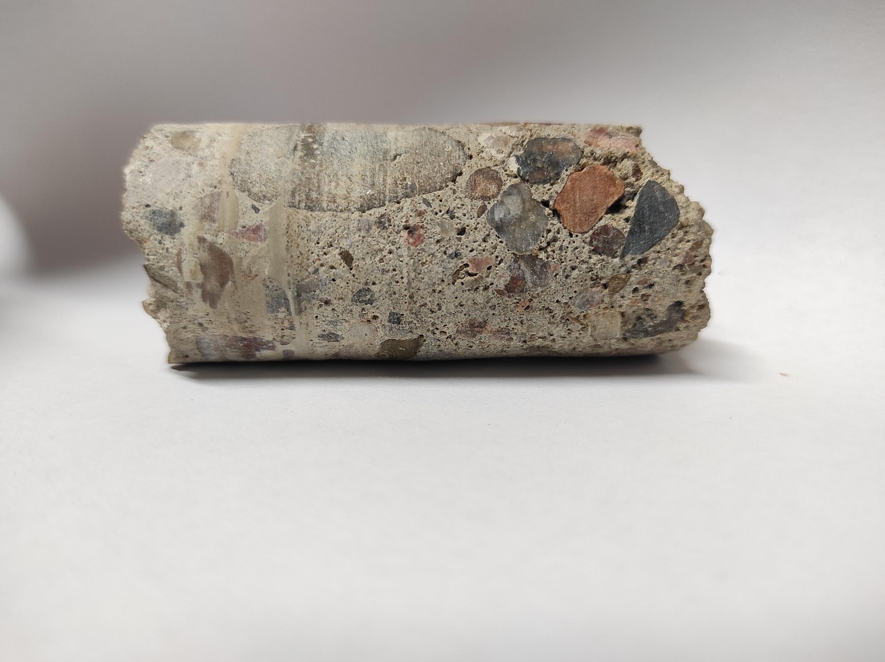
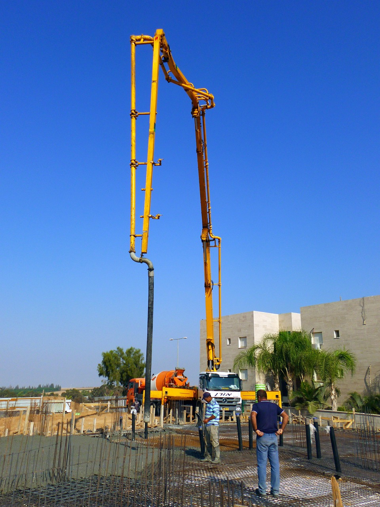

How is concrete made?
Concrete is made by mixing cement, water, and aggregates such as sand or gravel together. The mixture is then undergoes a chemical reaction called hydration, which allows the convcrete to harden over time and gain strength. Cement acts as the glue that holds concrete together, but can also contain pozzolanic materials such as fly ash or shale, shown in the table below. These pozzolans improve concrete strength and durability as well as provide a sustainable use for byproducts from other industries. Once concrete is poured, it must be property cured and tested to ensure it meets the necessary strength requirements for the project.
Pozzolanic Materials in Concrete
| Material | Description | Benefit |
|---|---|---|
| Fly Ash | Byproduct of coal combustion used as a cement replacement. | Improves workability & long-term strength. |
| Silica Fume | Byproduct of silicon alloy production | Increases concrete durability and resistance to chemicals. |
| Granulated Furnace Slag | Byproduct of steel manufacturing. | Increases sulfate resistance & lowers heat of hydration. |
Concrete Testing
Once concrete is poured, it must be tested for temperature, slump (The amount of water in the mix), and strength, to ensure it meets the individual requirements for each project.
Concrete Strength
Concrete strength is measured on a scale of PSI (pounds per square inch), which expresses the compressive strength of the concerete.
Concrete Pouring
Concrete is poured using a variety of methods including pumping, wheelbarrows, or buckets. The method used depends on both the size and location of the project.
FAQ
- How long does it take for concrete to cure?
- Concrete sets within a few hours of being poured but the final strength of concrete is measured at 28 days.
- Why does concrete have different strengths?
- Concrete strength is determined by a variety of factors including the water-to-cement ratio, curing, and aggregates. Hiher strength concrete is more expensive and used for specific projects such as bridges or high-rise buildings while lower strength concrete is used for sidealks or driveways.
- Other Questions?
- Click here to fill out our questions form.